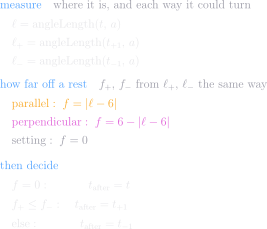

What an arrival does
Where it stops
parallelstops at c = 6
settingstops at every c
Starting — no measurement at all
there is one machine, so the first arrival starts it (adoptMachine) and nothing reads the gap between the two TILTS to choose
it runs once, on the first arrival, and sticks until a reset
Which slot to go to — measure, then decide

ONE measurement, and it is taken where the node already is — not at the two places it could go. The old form read ℓ at t, t+1 and t−1 and compared the results, which is a machine choosing the better of its next two positions without working out where it was heading
the way DOWN never appears: the two ways round the count-ring sum to 12, so asking which is shorter is asking whether the way up is at most 6
an update writes the END IT COUNTED FROM — the top for half the ring, the bottom for the other half — and reads the other straight off its opposite in the same statement (setTop / setBottom). The normal still follows, because it is a link and nothing moves it
f is a quantity of THIS PAGE, not of the node. One arrival turns the tilt at most one slot, so the code asks a comparison and a subtraction and never works out a distance at all — settled tests c against the mode's one stopping count, and step tests the way up against a quarter turn
the deciding never names a mode — by the time it runs, the mode is spent, having produced the one count stopping returns
f survives as a page-side measurement, because "each step lands nearer than it started" cannot be said without one
ℓ, ℓ₊ and ℓ₋ are one function called three times — settled uses the first, step the other two
The other updates
